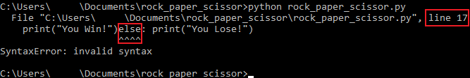

Writing Your First Game
Overview
This section will focus on coding a simple game of rock paper scissor in Python.
Note
Variable names in code are case-sensitive. If you wish to use your own variable names, please ensure that they are consistent throughout the entire file.
A common mistake that developers make is incorrectly typing a variable name, which could cause errors in the program.
Warning
You must have the rock_paper_scissor.py file opened in notepad before proceeding. You will be typing your code inside this file using notepad.
Please read the typographical conventions here before continuing. Remember to press the "enter/return" key after typing the line(s) of code.
Preparing Game Variables
This section will setup the variables that are needed for the game.
-
Import the
randommodule by typing the following in your newly createdrock_paper_scissor.pynotepad file:a. This first line of code imports the
randommodule, which possesses many functions for generating or manipulating random integers.b. The
importkeyword allows you to use modules in your code. This allows you to reuse code that you (or others) have created in any project.c. This program will be using the
randommodule randomly generate the choices rock, paper, or scissor for the computer opponent. -
Initialize all options by typing the following:
a. This line of code sets "rock, paper, scissor" as a tuple with the variable name
options.b. A tuple is a collection of data. It is a data structure that cannot be modified. Tuples use parentheses to define their elements.
c. Later, you will use the
randommodule to access functions that randomly choose between rock, paper, and scissor. -
Get player choice by typing the following:
a. This line of code pauses the program, displays the prompt "Rock, paper, or scissor?", and waits for a player to type something into the program.
b.
.lower()is a command that returns the lowercase string from the given string.c. In this case, any string that the user inputs will always be lowercase. For example, "rOcK" will be "rock" when
.lower()is used. This reduces the chance of user error by narrowing down the user input. -
Get computer choice by typing the following:
a. This line of code randomly selects "rock", "paper", or "scissor" from the tuple initialized back in step 2 of "Prepare Game Variables".
b. The
choice()method (from therandommodule) returns a randomly selected element from the specified sequence. -
Print out computer's choice by typing the following:
a. This line of code lets the player know what the computer has chosen as its option.
b. This line of code uses "f-strings", which is a concise and intuitive way to display variables in strings.
c.
print()is a function that outputs text or variables for the user to read. For example,print("Hello World!")will output "Hello World!" for the user to read.
Implementing Game Logic
This section will focus on implementing the logic flow that determines who wins the rock, paper, scissor game.
-
Handle invalid choices by typing the following:
a. This line of code checks if the user input is valid choice using the tuple initialized in step 2 of the previous section.
b. The
ifkeyword is a conditional statement used to execute a block of code only when a specific condition is met.c.
notis a conditional statement that executes a block of code only when the given condition evaluates to false.d.
inis an operator that checks whether a value exists in the given sequence.e. If neither "rock", "paper", nor "scissor" is typed in, then the program will print an error message.
Notes
It is good practice to let the user know what kind of error they incurred.
For example, the error message should let the user know that they should be typing in "rock", "paper", or "scissor" into the program.
Warning
Python uses indentation/white space as a way to interpret which group of statements belong to a particular block of code.
Press the "tab" key to properly indent your code. You may also press the "space" key four times to mimic one "tab" press.
-
Handle ties by typing the following:
a. The
==operator compares the value or equality between two objects.b. This line of code checks if the user input is the same as the computer's choice. If it is the same, then the program will print "Tie!".
c. The
elifkeyword, also known as "if-else", follows after anifkeyword. It functions the same as anifstatement. -
Handle user choice of rock by typing the following:
a. This line of code compares the player's "rock" choice to the computer's "scissor" choice, which will result in the player winning.
b. [0] is the first element of the
optionstuple, sooptions[0]is "rock".c. [2] is the third element of the
optionstuple, sooptions[2]is "scissor".Notes
In programming, many data structures start counting at 0 instead of 1.
-
Handle user choice of paper by typing the following:
a. This line of code compares the player's "paper" choice to the computer's "rock" choice, which will result in the player winning.
b. [1] is the second element of the
optionstuple, sooptions[1]is "paper".c. [0] is the first element of the
optionstuple, sooptions[0]is "rock". -
Handle user choice of scissor by typing the following:
a. This line of code compares the player's "scissor" choice to the computer's "paper" choice, which will result in the player winning.
b. [2] is the third element of the
optionstuple, sooptions[2]is "scissor".c. [1] is the second element of the
optionstuple, sooptions[1]is "paper". -
Handle lose scenario by typing the following:
a. This line of code runs when none of the above requirements are met. This means that the player loses by default if the player does not meet any of the above requirements.
c. The
elsekeyword executes if the "if-else" code block all evaluate toFalse.
Finalizing the Code
If you have followed the instructions correctly, then your Python file should look similar to the following:
import random
options = ("rock", "paper", "scissor")
user_input = input("Rock, paper, scissor? ").lower()
computer_choice = random.choice(options)
print(f"Computer chooses {computer_choice}")
if user_input not in options:
print("Funny error message here.")
elif user_input == computer_choice:
print("Tie!")
elif user_input == options[0] and computer_choice == options[2]:
print("You Win!")
elif user_input == options[1] and computer_choice == options[0]:
print("You Win!")
elif user_input == options[2] and computer_choice == options[1]:
print("You Win!")
else:
print("You Lose!")
Notes
You may add white space between blocks of code to help with code readability.
For the example above, module imports, variable initializations, and the if-else code blocks were separated by a single line to make them easier to read and distinguish.
Running the Game
This section will focus on running your game using the terminal.
-
Save the code by clicking the "File" menu in the top left of notepad, and then clicking on "Save" as shown below:
Notes
You may also save the file by using the CTRL + S save shortcut on your keyboard.
-
Return to the terminal from the previous
 Setting Up Your Project section.
Setting Up Your Project section.Warning
Ensure that you are in the
rock_paper_scissordirectory.If you did not close the terminal from the previous section, you should still be in the
rock_paper_scissordirectory.If you closed the terminal, refer back to "Setting Up Your Project" under the "Navigating Directories" section here.
-
Run the program in the
rock_paper_scissordirectory by typing in one of the following two commands in the terminal:or
-
Enjoy your game!
Success
If everything is correct, the terminal should look like the image below:

Failure
If there is a syntax error, then check which line can be found. For example, the picture below shows that the error is in line 17, and the error itself is around the
elsekeyword. The error can be caused by a lack of indentation, which can lead to statements belonging to the wrong block of code.
Failure
If there is a name error and
randomis not defined, then it is an import error. Addimport randomas the first line of code to fix this issue.Warning
If your code does not run, please compare your code in the finalized code section.
Conclusion
By the end of this section, you will have successfully implemented the following concepts in Python:
- Imported a Python module.
- Created a command to get user input.
- Generated random values.
- Created a logic flow for a game.
The next section will focus on uploading your project onto GitHub. Please proceed to Uploading to GitHub.